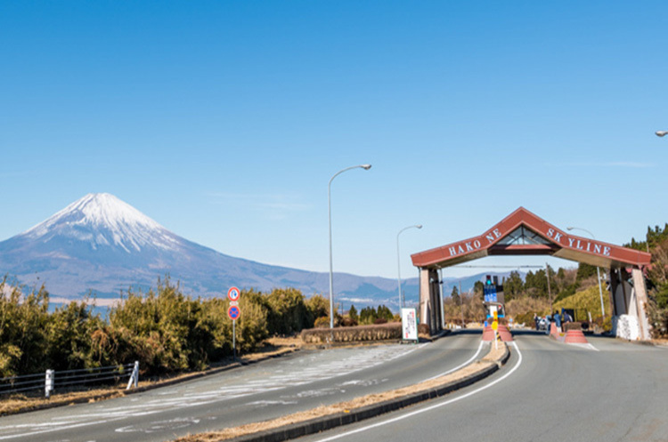

-

箱根スカイライン
神奈川県箱根町
標高が高く、富士山を望むことができる箱根の有名なツーリングコース。景色が絶景で、気候の良い日には富士山がくっきり見えます。
-
秩父ツーリングロード
埼玉県秩父市
埼玉県秩父市を中心に広がるツーリングロード。自然に囲まれた景色と、ワインディングロードが魅力。
-

ちばアクアライン
千葉県
東京湾を横断するアクアラインは、海を眺めながらのツーリングが楽しめます。
-
富津岬
千葉県富津市
最先端にある最上階の高さ21.8mの五葉松をかたどった展望塔からは、東京湾や対岸の景色、房総丘陵を一望できるパノラマビューを楽しめます。
-
足柄峠
神奈川県
箱根と伊豆半島を結ぶ峠で、ツーリングライダーに人気があります。景色が美しく、ワインディングも楽しめます。